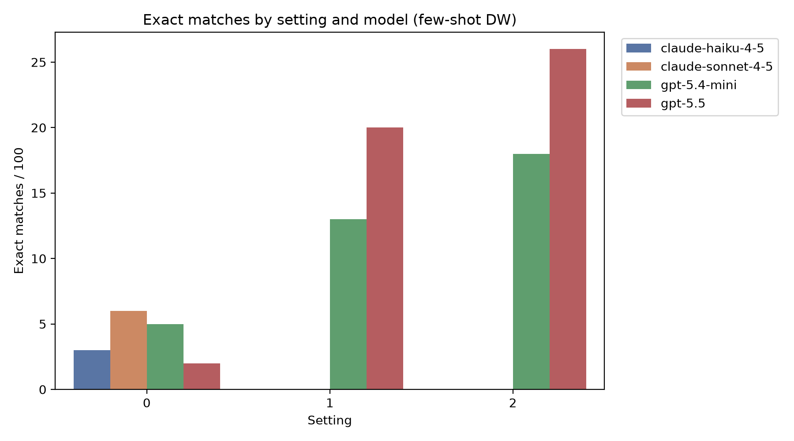
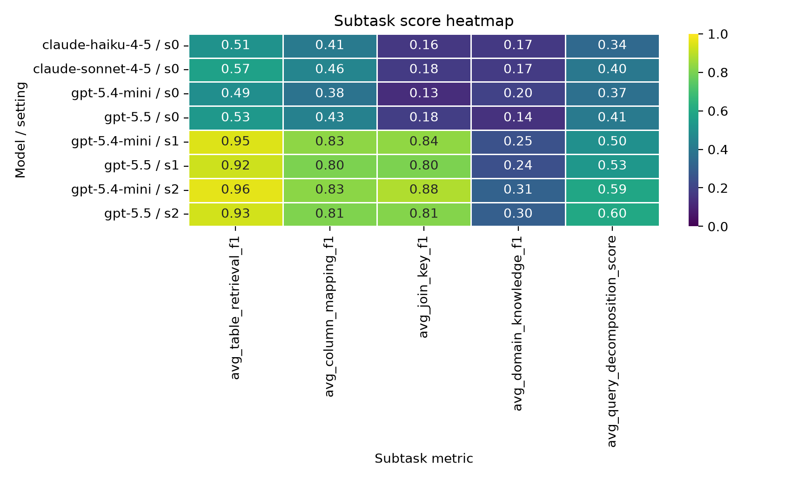
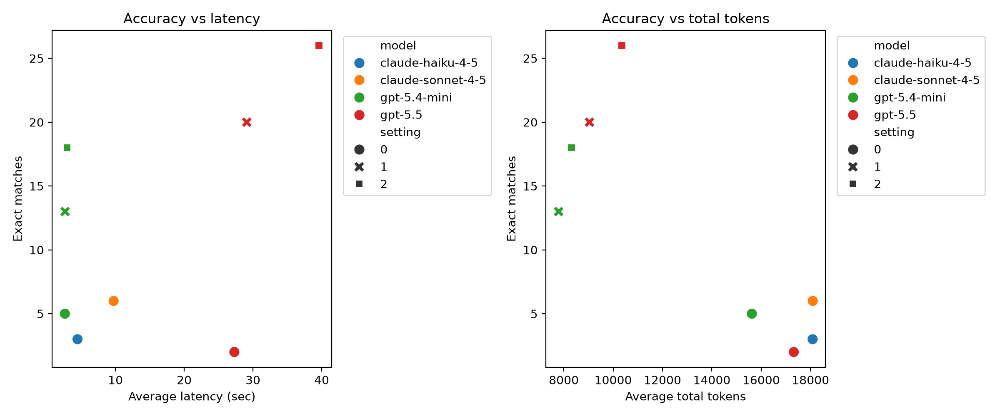

| model | setting | exact_matches | avg_table_retrieval_f1 | avg_column_mapping_f1 | avg_join_key_f1 | avg_domain_knowledge_f1 | avg_query_decomposition_score | avg_latency_sec | avg_total_tokens |
|---|---|---|---|---|---|---|---|---|---|
| claude-haiku-4-5 | 0 | 3 | 0.511164 | 0.407426 | 0.163939 | 0.165206 | 0.338462 | 4.473995 | 18085.33 |
| claude-sonnet-4-5 | 0 | 6 | 0.570137 | 0.455433 | 0.175032 | 0.172000 | 0.400000 | 9.728563 | 18092.46 |
| gpt-5.4-mini | 0 | 5 | 0.492057 | 0.379278 | 0.126675 | 0.199143 | 0.367033 | 2.640478 | 15621.70 |
| gpt-5.5 | 0 | 2 | 0.534740 | 0.433749 | 0.183366 | 0.142524 | 0.406593 | 27.290419 | 17320.56 |
| gpt-5.4-mini | 1 | 13 | 0.949129 | 0.828867 | 0.835018 | 0.250706 | 0.496703 | 2.671689 | 7788.95 |
| gpt-5.5 | 1 | 20 | 0.923971 | 0.802006 | 0.802310 | 0.243262 | 0.527473 | 29.100938 | 9039.28 |
| gpt-5.4-mini | 2 | 18 | 0.958895 | 0.825610 | 0.881825 | 0.309381 | 0.591209 | 2.960252 | 8307.25 |
| gpt-5.5 | 2 | 26 | 0.930284 | 0.806508 | 0.814500 | 0.300383 | 0.597802 | 39.612322 | 10349.74 |
The clearest pattern is that the large model is strongest in the
final outcome on the same task setting. At setting 2,
gpt-5.5 reaches 26 exact matches, while
gpt-5.4-mini reaches 18.
For gpt-5.4-mini, moving from setting 0 to 1 improves
exact matches from 5 to 13. Moving to setting 2 pushes it to 18. That is
a very large gain from prompt structure alone.
Table retrieval, column mapping, and join key alignment jump sharply under settings 1 and 2. That suggests that the biggest early gains are from schema grounding and relational composition, not from raw semantic reasoning alone.
Even at the best setting, the domain-knowledge and decomposition scores stay fairly modest. This is the evidence that the remaining gap is not just “finding the tables,” but also getting the question decomposition and compositional logic right.
The large model is much slower on average in the same setting ladder.
For example, gpt-5.5 is around 39.6 seconds latency at
setting 2 versus about 3.0 seconds for gpt-5.4-mini. So if
a smaller model can get within a few queries of the large model, that is
a compelling practical tradeoff.

This chart shows the biggest headline: the setting ladder helps the small model far more than it helps the large model, and the large model still leads overall.

This is the diagnostic view. The strongest gains are in the structural subtasks: retrieval, mapping, and joins. The decomposition score stays comparatively low, reinforcing that the final reasoning step is still the bottleneck.

This shows the cost/latency tradeoff directly. The small model is much cheaper and much faster in the same setting regime, while the large model buys additional correctness with substantially more latency.
If your question is “do larger models perform better?”, the evidence here says yes, but the reason is not just model size. The setting changes appear to be a powerful lever for smaller models. In practice, the strong small-model result at setting 2 suggests that structured prompting can recover a non-trivial share of the large-model advantage without paying the full latency cost.
The remaining question is whether the improvement is stable across examples. That is why the per-run JSON logs in eval/unified-output/fewshot are the right next place to look.